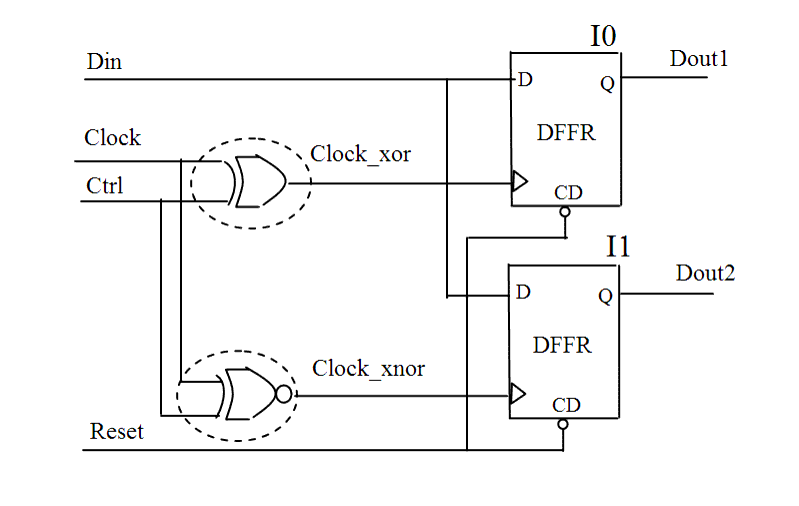

| Description | This rule checks if there is an XOR or XNOR gate in the clock path, and thus a gated clock generated in the design. A gated clock may adversely affect timing analysis and clock tree synthesis. You can activate this rule to double check such clocks and avoid metastability in the timing sequence. |
| Policy | DESIGN |
| Ruleset | CLOCKS |
| Language | VHDL/Verilog |
| Type | Hardware |
| Severity | Error |
This is an example of invalid Verilog code, followed by a circuit diagram that illustrates the problem:
module ntl_clk19_top (Clock, Ctrl, Reset, Din, Dout1, Dout2); input Clock, Reset, Ctrl, Din; output Dout1, Dout2; reg Dout1, Dout2; wire Clock_xor, Clock_xnor; assign Clock_xor = Clock ^ Ctrl; // NTL_CLK19 fires -- XOR gate on clock path assign Clock_xnor = ~(Clock ^ Ctrl); // NTL_CLK19 fires --XNOR gate on clock path ... endmodule